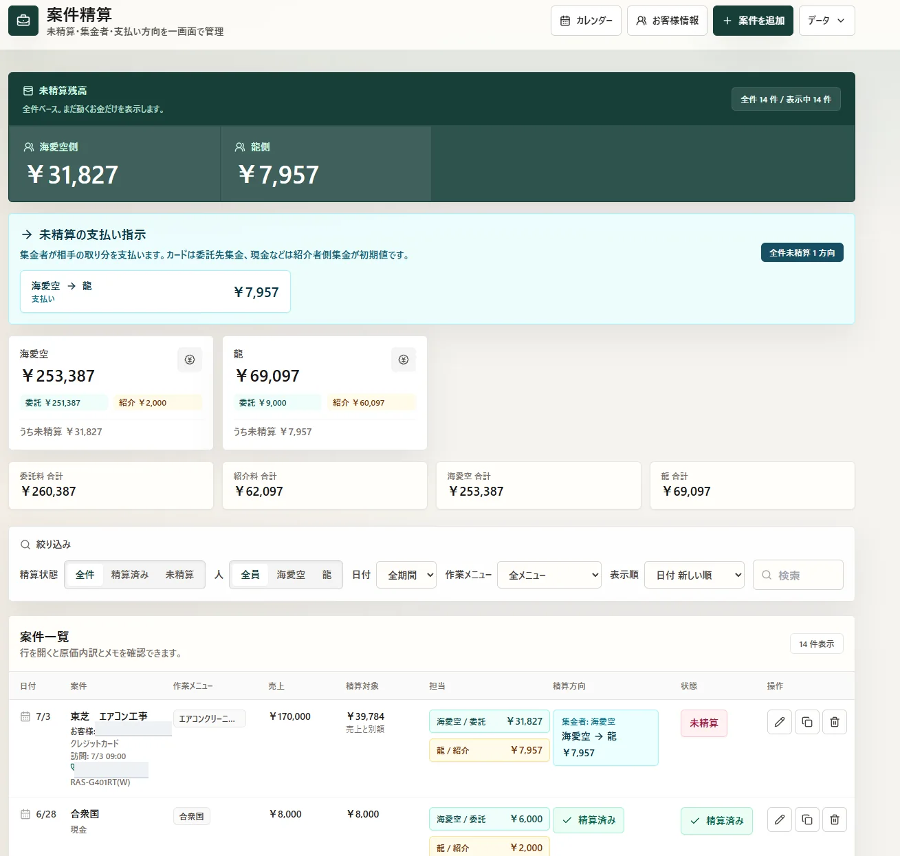
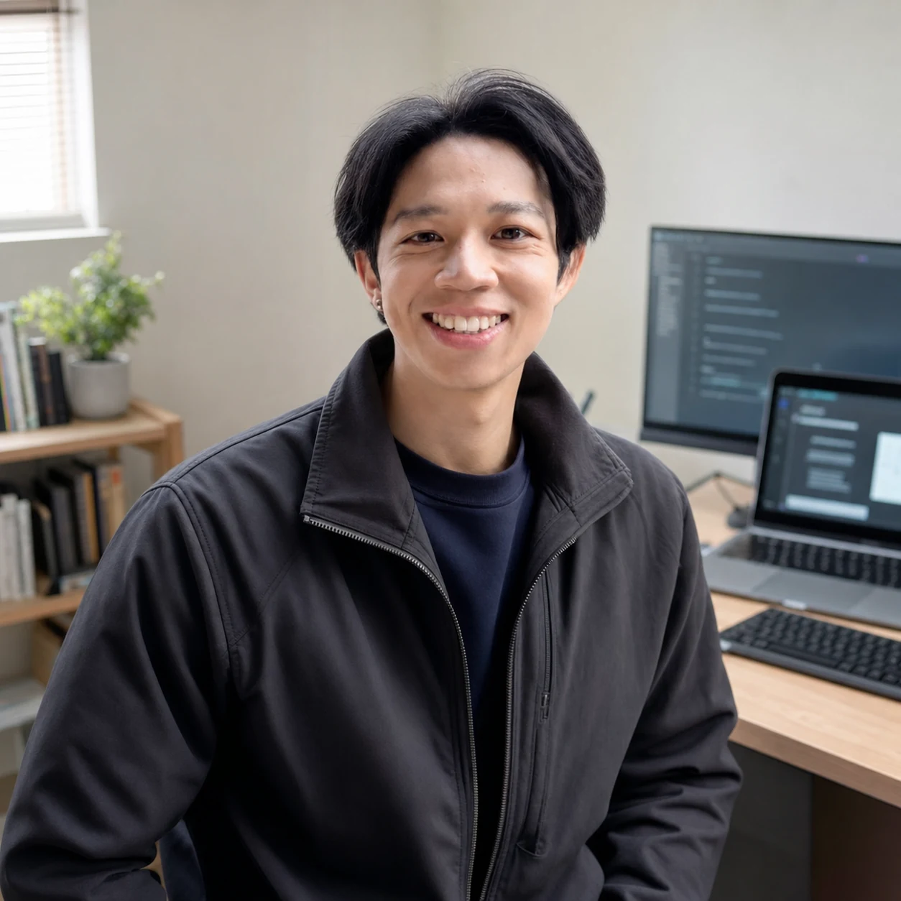

IN-HOUSE / BUSINESS APP
受付・見積・発注・精算システム
受付から精算までの情報を一画面に統合。自社事業で3か月、月平均5件ほどの実案件に使いながら、現場に合わせて改善しています。
- 課題
- 受付・見積・発注・精算の情報が分散し、判断と確認に時間がかかる
- 対応
- 現場整理、要件定義、UI設計、試作、導入後の改善
- 成果
- 3か月、月平均5件ほどの実案件で継続運用
顧客と現場の声を聞く。
曖昧な業務ルールを整理する。
試作、導入、改善まで伴走する。
1.0 / LISTEN顧客と現場を理解
2.0 / DESIGN人と仕組みの役割設計
3.0 / ADOPT試作・導入・改善
SELECTED WORKS
自社事業と受託案件で、ヒアリングから業務設計、試作、導入後の改善まで担当しました。

エアコン設置・修理の事業を運営し、顧客対応、見積、施工、協力会社との調整まで担当しています。 現場の詰まりや認識違いを当事者として捉え、生成AIを活用した試作と業務改善につなげてきました。
当事者へのヒアリングから、作業の詰まりと認識違いを見つける。
何を仕組みに任せ、何を人の確認として残すかを決める。
生成AIで試作し、実際の業務データと照合しながら修正する。
AI・SaaS導入、業務整理、プロジェクト推進に関わる採用・協業のご相談を歓迎しています。